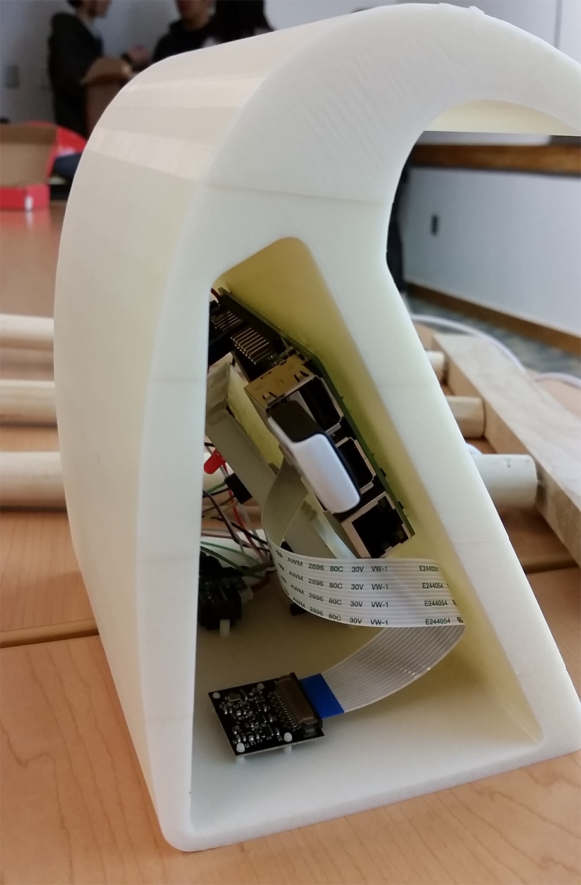
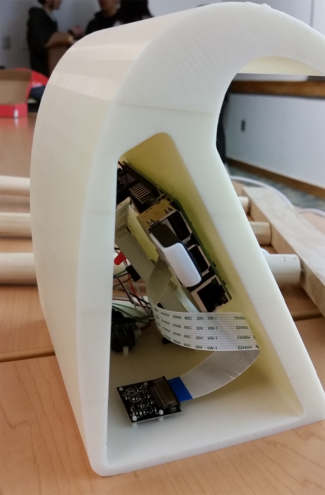

Course Projects
Here are some of my old course projects from my university career:
Master's Practicum: IoT Infant Monitor
Our group wanted to add an extra level of connectivity to commercially-available baby monitors,
specifically for addressing Sudden Infant Death Syndrome (SIDS) and alerting to parents when
breathing has stopped. After interviewing parents, one issue that came up was the abrupt nature of
monitor alarms that might occur for false readings. We wanted to utilize mobile technology to
enable the parent to receive alerts, for example, even if the parent were outside in the yard
while the baby was napping indoors. We produced a prototype that sent SMS text alerts (via the Twilio API) to parents'
phones when detected breathing dropped for about 20 seconds.
 

If a parent wanted to see their child's breathing rate in real-time, I created a simple webpage (a blogspot page at the time) integrated with Plotly that graphed our physical sensor data.

Ideally, a single, fully developed app would be responsible for receiving alerts and displaying breathing data, but our time constraints limited us to separate native SMS and web page data display.

Volunteer Manager App
I worked with after-school K-12 programs in San Francisco and Oakland as an undergrad, while also interacting with different groups on campus. One potentially troublesome thing that occurred
everyday was tracking attendance, especially for those who were participating for credit over the
course of the semester. The idea behind the Volunteer Manager is to have an easy way to track
attendance in addition to other aspects of the daily schedule, such as organizing transportation
to and from volunteer sites.


Furthermore, organizations will have the flexibility of shaping the app to meet their specific needs, such as if volunteers are required to fill out progress sheets for one-on-one tutoring.
Landscape Evolution Simulations in MATLAB
Utilizing second-order time-dependent partial differential equations and recursive formulas,
an erosion scenario featuring visualization of such processes as rilling is shown below in an
arbitrarily determined portion of earth.

PDEs again play apart in the following simulation that features a standing wave enclosed in a predetermined
two-dimensional grid.

GIS Distribution of Argia vivida in California
A research project I did as an undergraduate allowed me to analyze mountains of dead damselflies
and the geodata associated with each specimen. Filtering out for certain repeat locations, I used ArcGIS to produce
a historical distribution of the species across the state.